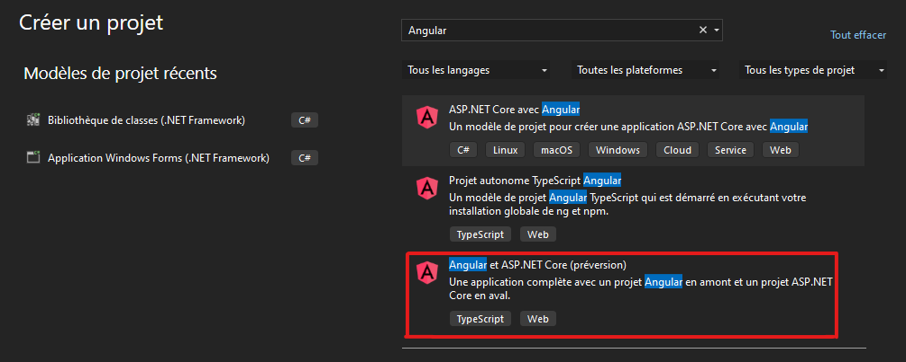

Web Application - Angular
Créer une application ASP.NET Core avec Angular dans Visual Studio
Comment créer un projet ASP.NET Core en tant que back-end d’API et un projet Angular en tant qu’interface utilisateur,
d'après la documentation de Microsoft.
Dans cette page
Prérequis :
A installer :
Visual Studio 2022version 17.5 ou ultérieure avecASP.NETetweb developmentnpm(https://www.npmjs.com/), qui est inclus dansNode.jsAngular CLI(https://angular.io/cli)
Créer l'application front-end :
-
Dans la fenêtre de démarrage, sélectionnez Créer un projet.

-
Recherchez
Angulardans la barre de recherche en haut, puis sélectionnez Angular et ASP.NET Core (préversion).
-
Donnez un nom à votre projet et à votre solution, puis choisissez Créer.
Une fois le projet créé, l’Explorateur de solutions doit ressembler à ceci :

Définissez les propriétés du projet :
-
Dans l’Explorateur de solutions, cliquez avec le bouton droit sur le projet ASP.NET Core et choisissez Propriétés.

-
Dans la page Propriétés, ouvrez l’onglet Déboguer et sélectionnez l’option Profils de lancement de débogage. Décochez l’option Lancer le navigateur.

Cela empêche l’ouverture de la page web avec les données météorologiques sources.
Démarrer le projet :
Pour démarrer le projet, appuyez sur F5 ou sélectionnez le bouton Démarrer en haut de la fenêtre. Deux invites de commandes s’affichent :
- Le projet API ASP.NET Core en cours d’exécution
- L’infrastructure CLI Angular exécutant la commande ng start